대기환경산업기사 (2019-03-03 기출문제)
1과목: 대기오염개론
1. 다음 대기오염의 역사적 사건에 대한 주 오염물질의 연결로 옳은 것은?
- 보팔시 사건 : SO2, H2SO4-mist
- 포자리카 사건 : H2S
- 체르노빌 사건 : PCBs
- 뮤즈계곡 사건 : methylisocynate
(정답률: 85%)

2. 대류권에서 광화학 대기오염에 영향을 미치는 중요한 태양 빛 흡수 기체의 흡수성에 관한 설명으로 옳지 않은 것은?
- 오존은 200~320nm의 파장에서 강한 흡수가, 450~700nm 에서는 약한 흡수가 있다.
- 이산화황은 파장 340nm이하와 470~550nm에 강한 흡수를 보이며, 대류권에서 쉽게 광분해 된다.
- 알데히드는 313nm 이하에서 광분해된다.
- 케톤은 300~700nm에서 약한 흡수를 하여 광분해된다.
(정답률: 74%)
3. 오존층 보호를 위한 국제협약으로만 연결된 것은?
- 헬싱키 의성서 - 소피아 의정서 - 람사르협약
- 소피아의정서 - 비엔나 협약 - 바젤협약
- 런던회의- 비엔나 협약 - 바젤협약
- 비엔나협약 - 몬트리올 의정서 - 코펜하겐회의
(정답률: 87%)
4. 다음 설명하는 대기오염물질로 옳은 것은?
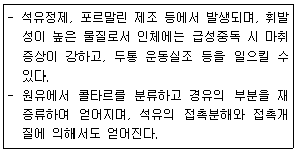
- 벤젠
- 이황화탄소
- 불소
- 카드뮴
(정답률: 77%)
5. 대기오염물질과 그 영향에 대한 설명 중 가장 거리가 먼 것은?
- CO : 혈액 내 Hb(헤모글로빈)과의 친화력이 산소의 약 21배에 달해 산소운반 능력을 저하시킨다.
- NO : 무색의 기체로 혈액 내 Hb과의 결합력이 CO보다 수백 배 더 강하다.
- O3 및 기타 광화학적 옥시던트 : DNA, RNA에도 작용하여 유전인자에 변화를 일으킨다.
- HC : 올레핀계 탄화수소는 광화학적 스모그에 적극 반응하는 물질이다.
(정답률: 77%)
6. 다음은 어떤 대기오염물질에 대한 설명인가?
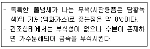
- Pb(C2H5)4
- H2S
- HCN
- COCl2
(정답률: 71%)
7. 다음 중 온실효과의 기여도가 가장 높은 것은?
- N2O
- CFC 11&12
- CO2
- CH4
(정답률: 78%)
8. 원형굴뚝의 반경이 1.5m, 배출속도가 7m/s, 평균풍속은 3.5m/s 일 때, 다음식을 이용하여 Δh(유효상승고)를 계산하면?
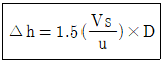
- 18m
- 9m
- 6m
- 4.5m
(정답률: 77%)
9. 다음 특정물질 중 오존 파괴지수가 가장 큰 것은?
- CF3Br
- CCl4
- CH2BrCl
- CH2FBr
(정답률: 63%)
10. 로스앤젤레스형 대기오염의 특성으로 옳지 않은 것은?
- 광화학적 산화물(photochemical oxidants)을 형성하였다.
- 질소산화물과 올레핀계 탄화수소 등이 원인물질로 작용했다.
- 자동차 연료인 석유계 연료 등이 주원인물질로 작용했다.
- 초저녁에 주로 발생하였고 복사역전층과 무풍상태가 계속되었다.
(정답률: 83%)
11. 유해가스상 대기오염물질이 식물에 미치는 영향에 관한 설명으로 가장 거리가 먼 것은?
- 고등식물에 대한 피해를 주는 대기오염물질 중에서 독성성분 순으로 나열하면 Cl2 ＞ SO2 ＞ HF ＞ O3 ＞NO2 순이다.
- 아황산가스는 특히 소나무과, 콩과, 맥류 등이 피해를 많이 입는다.
- 황화수소에 강한식물로는 복숭아, 딸기, 사과 등이다.
- 일산화탄소는 식물에는 별로 심각한 영향을 주지 않으나 500ppm 정도에서 토마토 잎에 피해를 나타낸다.
(정답률: 74%)
12. 라돈에 관한 설명으로 옳지 않은 것은?
- 지구상에서 발견된 자연방사능 물질 중의 하나이다.
- 사람이 매우 흡입하기 쉬운 가스성 물질이다.
- 반감기는 3.8일이며, 라듐의 핵분열 시 생성되는 물질이다.
- 액화되면 푸른색을 띠며, 공기보다 1.2배 무거워 지표에 가깝게 존재하며, 화학적으로 반응을 나타낸다.
(정답률: 82%)
13. 대표적인 증상으로 인체 혈액 헤모글로빈의 기본요소인 포르피린 고리의 형성을 방해함으로써 헤모글로빈의 형성을 억제하므로, 중독에 걸렸을 경우 만성 빈혈이 발생할 수 있는 대기오염물질에 해당하는 것은?
- 납
- 아연
- 안티몬
- 비소
(정답률: 75%)
14. 대기 중에 존재하는 기체상의 질소산화물 중 대류권에서는 온실가스로 알려져 있고 일명 웃음기체라고도 하며, 성층권에서는 오존층 파괴물질로 알려져 있는 것은?
- N2O
- NO2
- NO3
- N2O5
(정답률: 85%)
15. Aerodynamic diameter의 정의로 가장 적합한 것은?
- 본래의 먼지보다 침강속도가 작은 구형입자의 직경
- 본래의 먼지와 침강속도가 동일하며, 밀도 1g/cm3인 구형입자의 직경
- 본래의 먼지와 밀도 및 침강속도가 동일한 구형입자의 직경
- 본래의 먼지보다 침강속도가 큰 구형입자의 직경
(정답률: 83%)
16. 지상 20m에서의 풍속이 3.9m/s라면 60m에서의 풍속은? (단, Deacon 법칙 적용, p=0.4)
- 약 4.7m/s
- 약 5.1m/s
- 약 5.8m/s
- 약 6.1m/s
(정답률: 64%)
17. 일산화탄소에 대한 설명으로 가장 거리가 먼 것은?
- 연료의 불완전연소에 의해 발생한다.
- 인체 내 호흡기관을 통해 들어오며 곧바로 배출되며, 축적성이 없다.
- 비흡연자보다 흡연자의 체내 일산화탄소 농도가 높다.
- 헤모글로빈의 일산화탄소에 대한 친화력은 산소보다 더 크다.
(정답률: 81%)
18. 어떤 굴뚝의 배출가스 중 SO2 농도가 240ppm이었다. SO2 의 배출허용기준이 400mg/m3 이하라면 기준 준수를 위하여 이 배출시설에서 줄여야 할 아황산가스의 최소농도는 약 몇 mg/m3인가? (단, 표준상태 기준)
- 286
- 325
- 452
- 571
(정답률: 55%)
19. 아래 그림에서 D상태에 해당되는 연기의 형태는? (단, 점선은 건조단열감율선)
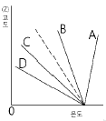
- fumigation
- lofting
- fanning
- looping
(정답률: 66%)
20. 대기권의 오존층과 관련된 설명으로 가장 거리가 먼 것은?
- 290nm 이하의 단파장인 UV-C는 대기 중의 산소와 오존분자 등의 가스 성분에 의해 대부분이 흡수되므로 지표면에 거의 도달하지 않는다.
- 오존의 생성 및 분해반응에 의해 자연상태의 성층권 영역에서는 일정한 수준의 오존량이 평형을 이루고, 다른 대기권 영역에 비해 오존 농도가 높은 오존층이 생긴다.
- 오존농도의 고도분포는 지상 약 25km에서 평균적으로 약 10ppb의 최대농도를 나타낸다.
- 지구전체의 평균 오존량은 약 300Dobson전후이지만, 지리적 또는 계절적으로 평균치의 ±50% 정도까지도 변화한다.
(정답률: 75%)
2과목: 대기오염 공정시험 기준(방법)
21. 일반적으로 환경대기 중에 부유하고 있는 총부유먼지와 10μm 이하의 입자상 물질을 여과지 위에 채취하여 질량농도를 구하거나 금속 등의 성분분석에 이용되며, 흡입펌프, 분립장치, 여과지홀더 및 유량측정부의 구성을 갖는 분석방법으로 가장 적합한 것은?
- 고용량 공기시료채취기법
- 저용량 공기시료채취기법
- 광산란법
- 광투과법
(정답률: 74%)
22. 배출가스 중 입자상 물질 시료채취를 위한 분석기기 및 기구에 관한 설명으로 옳지 않은 것은?
- 흡입노즐은 스테인리스강 재질, 경질유리, 또는 석영 유리제로 만들어진 것으로 사용한다.
- 흡입노즐의 안과 밖의 가스흐름이 흐트러지지 않도록 흡입노즐 내경(d)은 3mm이상으로 한다.
- 흡입관은 수분응축을 방지하기 위해 시료가스 온도를 120±14℃로 유지할 수 있는 가열기를 갖춘 보로실리 케이트, 스테인리스강 재질 또는 석영유리관을 사용한다.
- 흡입노즐의 꼭지점은 60°이하의 예각이 되도록 하고 매끈한 반구모양으로 한다.
(정답률: 73%)
23. 환경대기 시료채취방법에 관한 설명으로 옳지 않은 것은?
- 용기채취법은 시료를 일단 일정한 용기에 채취한 다음 분석에 이용하는 방법으로 채취관 - 용기, 또는 채취관 - 유량조절기 - 흡입펌프 - 용기로 구성된다.
- 용기채취법에서 용기는 일반적으로 진공병 또는 공기주머니(air bag)를 사용한다.
- 용매채취법은 측정대상 기체와 선택적으로 흡수 또는 반응하는 용매에 시료가스를 일정유량으로 통과시켜 채취하는 방법으로 채취관 - 여과재 - 채취부 - 흡입 펌프 - 유량계(가스미터)로 구성된다.
- 직접채취법에서 채취관은 PVC관을 사용하며, 채취관의 길이는 10m 이내로 한다.
(정답률: 75%)
24. 환경대기 중의 탄화수소 농도를 측정하기 위한 주 시험법은?
- 총탄화수소 측정법
- 비메탄 탄화수소 측정법
- 활성 탄화수소 측정법
- 비활성 탄화수소 측정법
(정답률: 76%)
25. 굴뚝 배출가스 중 불소화합물 분석방법으로 옳지 않은 것은?
- 자외선/가시선분광법은 시료가스 중에 알루미늄(Ⅲ), 철(Ⅱ), 구리(Ⅱ) 등의 중금속 이온이나 인산이온이 존재하면 방해효과를 나타내므로 적절한 증류방법에 의해 분리한 후 정량한다.
- 자외선/가시선분광법은 증류온도를 145±5℃, 유출속도를 3~5mL/min으로 조절하고, 증류된 용액이 약 220mL가 될 때까지 증류를 계속한다.
- 적정법은 pH를 조절하고 네오트린을 가한 다음 수산화 바륨용액으로 적정한다.
- 자외선/가시선분광법의 흡수파장은 620nm를 사용한다.
(정답률: 50%)
26. 다음은 배출가스 중의 페놀류의 기체크로마토그래프 분석방법을 설명한 것이다. ( )안에 알맞은 것은?
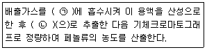
- ㉠ 증류수, ㉡ 과망간산칼륨
- ㉠ 수산화소듐용액, ㉡ 과망간산칼륨
- ㉠ 증류수, ㉡ 아세트산에틸
- ㉠ 수산화소듐용액, ㉡ 아세트산에틸
(정답률: 62%)
27. 다음 중 대기오염공정시험기준에서 ＜아래＞의 조건에 해당하는 규정농도 이상의 것을 사용해야 하는 시약은? (단, 따로 규정이 없는 상태)
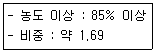
- HClO4
- H3PO4
- HCl
- HNO3
(정답률: 66%)
28. 자동기록식 광전분광광도계의 파장교정에 사용되는 흡수 스펙트럼은?
- 홀뮴유리
- 석영유리
- 플라스틱
- 방전유리
(정답률: 82%)
29. 기체크로마토그래피의 충전물에서 고정상 액체의 구비조건에 대한 설명으로 거리가 먼 것은?
- 분석대상 성분을 완전히 분리할 수 있는 것이어야 한다.
- 사용온도에서 증기압이 높은 것이어야 한다.
- 화학적 성분이 일정한 것이어야 한다.
- 사용온도에서 점성이 작은 것이어야 한다.
(정답률: 73%)
30. 배출가스 중 납화합물을 자외선/가시선분광법 으로 분석할 때 사용되는 시약 또는 용액에 해당하지 않는 것은?
- 디티존
- 클로로폼
- 시안화 포타슘용액
- 아세틸아세톤
(정답률: 67%)
31. 기체크로마토그래피에서 A,B 성분의 보유시간이 각각 2분, 3분 이었으며, 피크폭은 32초, 38초 이었다면 이 때 분리도 (R)은?
- 1.1
- 1.4
- 1.7
- 2.2
(정답률: 66%)
32. 다음은 배출가스 중 황화수소 분석방법에 관한 설명이다. ( )안에 알맞은 것은?
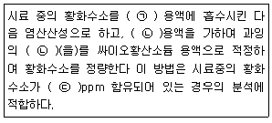
- ㉠ 메틸렌블루우, ㉡ 디에틸아민동, ㉢ 5~1000
- ㉠ 아연아민착염, ㉡ 아이오딘, ㉢ 100~2000
- ㉠ 메틸렌블루우, ㉡ 아이오딘, ㉢ 100~2000
- ㉠ 아연아민착염, ㉡ 디에틸아민동, ㉢ 5~1000
(정답률: 57%)
33. 굴뚝 배출가스 중 질소산화물의 연속자동측정방법으로 가장 거리가 먼 것은?
- 화학발광법
- 이온전극법
- 적외선흡수법
- 자외선흡수법
(정답률: 69%)
34. 다음은 측정용어의 정의이다. ( )안에 가장 적합한 용어는?
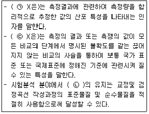
- ㉠ 대수정규분포도, ㉡ (측정의) 유효성
- ㉠ (측정)불확도, ㉡ (측정의) 유효성
- ㉠ 대수정규분포도, ㉡ (측정의) 소급성
- ㉠ (측정)불확도, ㉡ (측정의) 소급성
(정답률: 62%)
35. 굴뚝반경이 3.2m인 원형 굴뚝에서 먼지를 채취하고자 할때의 측정점수는?
- 8
- 12
- 16
- 20
(정답률: 75%)
36. 환경대기 중의 아황산가스 측정을 위한 시험방법이 아닌 것은?
- 불꽃광도법
- 용액전도율법
- 파라로자닐린법
- 나프틸에틸렌디아민법
(정답률: 61%)
37. 화학분석 일반사항에 관한 설명으로 옳지 않은 것은?
- “약 ”이란 그 무게 또는 부피에 대하여 ±5%이상의 차가 있어서는 안 된다.
- 포준품을 채취할 때 표준액이 정수로 기재되어 있어도 실험자가 환산하여 기재수치에 “약”자를 붙여 사용할 수 있다.
- “방울수”라 함은 20℃에서 정제수 20방울을 떨어뜨릴 때 그 부피가 약 1mL 되는 것을 뜻한다.
- 시험에 사용하는 표준품은 원칙적으로 특급시약을 사용하며 표준액을 조제하기 위한 표준용시약은 따로 규정이 없는 한 데시케이터에 보존된 것을 사용한다.
(정답률: 74%)
38. 휘발성유기화합물(VOCs)누출확인방법에서 사용하는 용어 정의 중 “응답시간”은 VOCs가 시료채취장치로 들어가 농도 변화를 일으키기 시작하여 기기 계기판의 최종값이 얼마를 나타내는데 걸리는 시간을 의미하는가? (단, VOCs 측정기기 및 관련장비는 사양과 성능기준을 만족한다,)
- 80%
- 85%
- 90%
- 95%
(정답률: 74%)
39. 램버어트 비어(Lambert-Beer)의 법칙에 관한 설명으로 옳지 않은 것은? (단, I0 = 입사광의 강도, It= 투사광의 강도, C = 농도, L = 빛의 투사거리, ε = 흡광계수, t = 투과도)
- It = I0 ㆍ10-εCL로 표현한다.
- log(1/t)=A를 흡광도라 한다.
- ε는 비례상수로서 흡광계수라 하고, C=1mmol, L = 1mm일 때의 ε의 값을 몰 흡광계수라 한다.
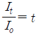
를 투과도라 한다.
(정답률: 72%)
40. 다음은 유류 중의 황함유량 분석방법 중 연소관식 공기법에 관한 설명이다. ( )안에 알맞은 것은?
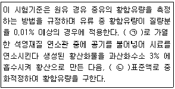
- ㉠ 450~550℃, ㉡ 질산칼륨
- ㉠ 450~550℃, ㉡ 수산화소듐
- ㉠ 950~1100℃, ㉡ 질산칼륨
- ㉠ 950~1100℃, ㉡ 수산화소듐
(정답률: 65%)
3과목: 대기오염방지기술
41. 먼지농도가 10g/Sm3인 매연을 집진율 80%인 집진장치로 1차 처리하고 다시 2차 집진장치로 처리한 결과 배출가스 중 먼지 농도가 0.2g/Sm3 이 되었다. 이 때 2차 집진장치의 집진율은? (단, 직렬 기준)
- 70%
- 80%
- 85%
- 90%
(정답률: 62%)
42. Butane 1Sm3을 공기비 1.⑤로 완전연소시면 연소가스 (건조)부피는 얼마인가?
- 10 Sm3
- 20 Sm3
- 30 Sm3
- 40 Sm3
(정답률: 55%)
43. 유압분무식 버너에 관한 설명으로 옳지 않은 것은?
- 구조가 간단하여 유지 및 보수가 용이하다.
- 유량조절 범위가 좁아 부하변동에 적응하기 어렵다.
- 연료분사범위는 15~2000KL/hr 정도이다.
- 분무각도가 40~90°정도로 크다.
(정답률: 65%)
44. 다음 중 일반적으로 착화온도가 가장 높은 것은?
- 메탄
- 수소
- 목탄
- 중유
(정답률: 66%)
45. 유량 40715m3/h의 공기를 원형 흡수탑을 거쳐 정화하려고 한다. 흡수탑의 접근유속을 2.5m/s로 유지하려면 소요되는 흡수탑의 지름(m)은?
- 약 2.8
- 약 2.4
- 약 1.7
- 약 1.2
(정답률: 57%)
46. 먼지의 진비중(S)과 겉보기 비중(SB)이 다음과 같을 때 다음 중 재비산 현상을 유발할 가능성이 가장 큰 것은?
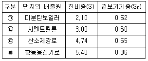
- ㉠
- ㉡
- ㉢
- ㉣
(정답률: 69%)
47. 중력집진장치의 효율을 향상시키기 위한 조건에 관한 설명으로 거리가 먼 것은?
- 침강실 내의 처리가스의 속도가 작을수록 미립자가 포집된다.
- 침강실 내의 배기가스의 기류는 균일해야 한다.
- 침강실의 높이는 작고 길이는 길수록 집진율이 높아진다.
- 유입부의 유속이 클수록 처리 효율이 높다.
(정답률: 55%)
48. A굴뚝 배출가스 중 염소가스의 농도가 150mL/Sm3이다. 이 염소가스의 농도를 25mg/Sm3로 저하시키기 위하여 제거해야 할 양(mL/Sm3)은 약 얼마인가?
- 95
- 111
- 125
- 142
(정답률: 49%)
49. 세정 집진장치에 관한 설명으로 옳지 않은 것은?
- 고온다습한 가스나 연소성 및 폭발성 가스의 처리가 가능하다.
- 점착성 및 조해성 먼지의 처리가 가능하다.
- 소수성 입자의 집진율은 낮다.
- 입자상 물질과 가스의 동시 제거는 불가능하나, 타 집진 장치와 비교 시 장기운전이나 휴식 후의 운전재개 시 장애는 거의 없다.
(정답률: 67%)
50. 전기집진장치의 유지관리에 관한 설명으로 가장 거리가 먼 것은?
- 시동시에는 배출가스를 도입하기 최소 1시간 전에 애관용 히터를 가열하여 애자관 표면에 수분이나 먼지의 부착을 방지한다.
- 시동시에는 고전압 회로의 절연저항이 100MΩ 이상이 되어야 한다.
- 운전 시 2차 전류가 매우 적을 때에는 먼지농도가 높거나 먼지의 겉보기 저항이 이상적으로 높을 경우이므로 조습용스프레이의 수량을 늘려 겉보기 저항을 낮추어야 한다.
- 정지시에는 접지저항을 적어도 연1회 이상 점검하고 10Ω 이하로 유지한다.
(정답률: 51%)
51. 유해가스 제거를 위한 흡수제의 구비조건으로 옳지 않은 것은?
- 용해도가 크고, 무독성이어야 한다.
- 액가스비가 작으며, 점성은 커야 한다.
- 착화성이 없으며, 비점은 높아야 한다.
- 휘발성이 적어야 한다.
(정답률: 71%)
52. 다음 집진장치 중 관성충돌, 확산, 증습, 응집, 부착성 등이 주 포집원리인 것은?
- 원심력 집진장치
- 세정 집진장치
- 여과집진장치
- 중력집진장치
(정답률: 72%)
53. Propane 432kg을 기화시킨다면 표준상태에서 기체의 용적은?
- 560 Sm3
- 540 Sm3
- 280 Sm3
- 220 Sm3
(정답률: 52%)
54. 초기에 98%의 집진율로 운전되고 있던 집진장치가 성능의 저하로 집진율이 96%로 떨어 졌다. 집진장치의 입구의 함진농도는 일정하다고 할 때 출구의 함진농도는 초기에 비해 어떻게 변화하겠는가?
- 1/4로 감소한다.
- 1/2로 감소한다.
- 2배로 증가한다.
- 4배로 증가한다.
(정답률: 67%)
55. 어떤 유해가스와 물이 일정온도에서 평형상태에 있다. 유해가스의 분압이 기상에서 60mmHg일 때 수중 유해가스의 농도가 2.7kmol/m3이면 이 때 헨리상수(atmㆍm3/kmol) 는? (단, 전압은 1 atm이다.)
- 0.01
- 0.02
- 0.03
- 0.04
(정답률: 51%)
56. 다음 집진장치 중 일반적으로 압력손실이 가장 큰 것은?
- 여과집진장치
- 원심력집진장치
- 전기집진장치
- 벤츄리스크러버
(정답률: 81%)
57. 탄소 85%, 수소 11.5%, 황 2.0% 들어있는 중유 1kg당 12Sm3의 공기를 넣어 완전 연소시킨다면, 표준상태에서 습윤 배출가스 중의 SO2농도는? (단, 중유중의 S성분은 모두 SO2로 된다.)
- 708 ppm
- 808 ppm
- 1107 ppm
- 1408 ppm
(정답률: 48%)
58. 관성력 집진장치의 일반적인 효율 향상조건에 관한 설명으로 옳지 않은 것은?
- 기류의 방향전환 시 곡률반경이 작을수록 미립자의 포집이 가능하다.
- 기류의 방향전환각도가 작고, 방향전환 횟수가 많을수록 압력손실을 커지지만 집진은 잘 된다.
- 충돌직전의 처리가스의 속도는 작고, 처리 후 출구 가스속도는 클수록 미립자의 제거가 쉽다.
- 적당한 모양과 크기의 dust box가 필요하다.
(정답률: 61%)
59. 메탄의 치환 염소화 반응에서 C2Cl4를 만들 경우 메탄 1kg당 부생되는 HCl의 이론량은? (단, 표준상태 기준)
- 4.2 Sm3
- 5.6 Sm3
- 6.4 Sm3
- 7.8 Sm3
(정답률: 45%)
60. 송풍관(duct)에서 흄(fume) 및 매우 가벼운 건조 먼지(예: 나무 등의 미세한 먼지와 산화아연, 산화알루미늄 등의 흄)의 반송속도로 가장 적합한 것은?
- 1~2 m/s
- 10 m/s
- 25 m/s
- 50 m/s
(정답률: 64%)
4과목: 대기환경 관계 법규
61. 대기환경보전법상 5년 이하의 징역이나 5천만원 이하의 벌금에 처하는 기준은?
- 연료사용 제한조치 등의 명령을 위반한 자
- 측정기기 운영ㆍ관리기준을 준수하지 않아 조치명령을 받았으나, 이 또한 이행하지 않아 받은 조업정지명령을 위반한 자
- 배출시설을 설치금지 장소에 설치해서 폐쇄명령을 받았으나 이를 이행하지 아니한 자
- 첨가제를 제조기준에 맞지 않게 제조한 자
(정답률: 42%)
62. 대기환경보전법령상 초과부과금 대상이 되는 대기오염물질에 해당되지 않는 것은?
- 일산화탄소
- 암모니아
- 먼지
- 염화수소
(정답률: 72%)
63. 대기환경보전법상 환경부장관은 대기오염물질과 온실가스를 줄여 대기환경을 개선하기 위하여 대기환경개선 종합계획을 수립하여야 한다. 이 종합계획에 포함되어야 할 사항으로 거리가 먼 것은? (단, 그 밖의 사항 등은 고려하지 않음)
- 시, 군, 구별 온실가스 배출량 세부명세서
- 대기오염물질의 배출현황 및 전망
- 기후변화로 인한 영향평가와 적응대책에 관한 사항
- 기후변화 관련 국제적 조화와 협력에 관한 사항
(정답률: 55%)
64. 환경정책기본법령상 납(Pb)의 대기환경기준(μg/m3)으로 옳은 것은? (단, 연간평균치)
- 0.5 이하
- 5 이하
- 50 이하
- 100 이하
(정답률: 62%)
65. 악취방지법규상 배출허용기준 및 엄격한 배출허용기준의 설정범위와 관련한 다음 설명 중 옳지 않은 것은?
- 배출허용기준의 측정은 복합악취를 측정하는 것을 원칙으로 하지만 사업자의 악취물질 배출 여부를 확인할 필요가 있는 경우에는 지정악취물질을 측정할 수 있다.
- 복합악취의 시료 채취는 사업장 안에 지면으로부터 높이 5m 이상의 일정한 악취배출구와 다른 악취발생원이 섞여 있는 경우에는 부지경계선 및 배출구에서 각각 채취한다.
- “배출구”라 함은 악취를 송풍기 등 기계장치등을 통하여 강제로 배출하는 통로(자연환기가 되는 창문ㆍ통기관 등을 제외한다)를 말한다.
- 부지경계선에서 복합악취의 공업지역에서 배출허용기준(희석배수)은 1000이하이다.
(정답률: 60%)
66. 대기환경보전법령상 인증을 생략할 수 있는 자동차에 해당하지 않는 것은?
- 항공기 지상 조업용 자동차
- 주한 외국군인의 가족이 사용하기 위하여 반입하는 자동차
- 훈련용 자동차로서 문화체육관광부장관의 확인을 받은 자동차
- 주한 외국군대의 구성원이 공용 목적으로 사용하기 위한 자동차
(정답률: 59%)
67. 대기환경보전법령상 “사업장의 연료사용량 감축 권고”조치를 하여야 하는 대기오염 경보발령 단계 기준은?
- 준주의보 발령단계
- 주의보 발령단계
- 경보 발령단계
- 중대경보 발령단계
(정답률: 67%)
68. 대기환경보전법령상 사업장별 환경기술인의 자격기준으로 거리가 먼 것은?
- 전체배출시설에 대하여 방지시설 설치면제를 받은 사업장은 5종사업장에 해당하는 기술인을 둘 수 있다.
- 4종사업장에서 환경부령에 따른 특정대기유해물질이 포함된 오염물질을 배출하는 경우에는 3종사업장에 해당하는 기술인을 두어야 한다.
- 공동방지시설에서 각 사업장의 대기오염물질발생량의 합계가 4종 및 5종 사업장의 규모에 해당하는 경우에는 4종 사업장에 해당되는 기술인을 둘 수 있다.
- 대기오염물질배출시설 중 일반 보일러만 설치한 사업장과 대기오염물질 중 먼지만 발생하는 사업장은 5종사업장에 해당하는 기술인을 둘 수 있다.
(정답률: 70%)
69. 대기환경보전법규상 휘발성유기화합물 배출규제와 관련된 행정처분기준 중 휘발성유기화합물 배출억제ㆍ방지시설 설치 등의 조치를 이행하였으나 기준에 미달하는 경우 위반차수(1차-2차-3차)별 행정처분기준으로 옳은 것은?
- 개선명령-개선명령-조업정지10일
- 개선명령-조업정지30일-폐쇄
- 조업정지10일-허가취소-폐쇄
- 경고-개선명령-조업정지10일
(정답률: 50%)
70. 대기환경보전법규상 자동차연료(휘발유)제조기준으로 옳지 않은 것은?(오류 신고가 접수된 문제입니다. 반드시 정답과 해설을 확인하시기 바랍니다.)
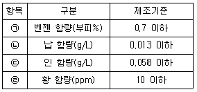
- ㉠
- ㉡
- ㉢
- ㉣
(정답률: 63%)
71. 대기환경보전법규상 특정대기유해물질이 아닌 것은?
- 히드라진
- 크롬 및 그 화합물
- 카드뮴 및 그 화합물
- 브롬 및 그 화합물
(정답률: 68%)
72. 환경정책기본법령상 각 항목에 대한 대기환경기준으로 옳은 것은?
- 아황산가스의 연간 평균치 : 0.03ppm 이하
- 아황산가스의 1시간 평균치 : 0.15ppm 이하
- 미세먼지(PM-10)의 연간 평균치 : 100μg/m3이하
- 오존(O3)의 8시간 평균치 : 0.1ppm 이하
(정답률: 46%)
73. 대기환경보전법상 장거리이동대기오염물질 대책위원회에 관한 사항으로 옳지 않은 것은?
- 위원회는 위원장 1명을 포함한 25명 이내의 위원으로 성별을 고려하여 구성한다.
- 위원회와 실무위원회 및 운영등에 관하여 필요한 사항은 환경부령으로 정한다.
- 위원장은 환경부차관으로 한다.
- 위원회의 효율적인 운영과 안건의 원활한 심의 지원을 위해 실무위원회를 둔다.
(정답률: 60%)
74. 대기환경보전법령상 대기오염물질발생량의 합계에 따른 사업장 종별 구분시 다음 중 “3종사업장”기준은?
- 대기오염물질발생량의 합계가 연간 30톤 이상 80톤 미만인 사업장
- 대기오염물질발생량의 합계가 연간 20톤 이상 50톤 미만인 사업장
- 대기오염물질발생량의 합계가 연간 10톤 이상 20톤 미만인 사업장
- 대기오염물질발생량의 합계가 연간 2톤 이상 10톤 미만인 사업장
(정답률: 82%)
75. 다음은 대기환경보전법규상 비산먼지의 발생을 억제하기 위한 시설의 설치 및 필요한 조치에 관한 엄격한 기준 중 “싣기와 내리기”작업 공정이다. ( )안에 알맞은 것은?
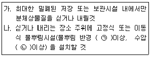
- ㉠ 5m, ㉡ 3.5kg/cm2
- ㉠ 5m, ㉡ 5kg/cm2
- ㉠ 7m, ㉡ 3.5kg/cm2
- ㉠ 7m, ㉡ 5kg/cm2
(정답률: 71%)
76. 악취방지법규상 위임업무 보고사항 중 악취검사기관의 지정, 지정사항 변경보고 접수 실적의 보고 횟수 기준은?
- 수시
- 연 1회
- 연 2회
- 연 4회
(정답률: 58%)
77. 대기환경보전법규상 환경기술인의 준수사항 및 관리사항을 이행하지 아니한 경우 각 위반차수별 행정처분기준(1차~4차)으로 옳은 것은?
- 선임명령-경고-경고-조업정지5일
- 선임명령-경고-조업정지5일-조업정지30일
- 변경명령-경고-조업정지5일-조업정지30일
- 경고-경고-경고-조업정지5일
(정답률: 65%)
78. 다음은 실내공기질 관리법령상 이 법의 적용대상이 되는 “대통령령으로 정하는 규모”기준이다.( )안에 가장 알맞은 것은?
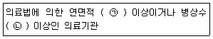
- ㉠ 2천제곱미터, ㉡ 100개
- ㉠ 1천제곱미터, ㉡ 100개
- ㉠ 2천제곱미터, ㉡ 50개
- ㉠ 1천제곱미터, ㉡ 50개
(정답률: 68%)
79. 실내공기질 관리법규상 신축 공동주택의 실내공기질 권고기준으로 틀린 것은?
- 벤젠 : 30μg/m3 이하
- 톨루엔 : 1000μg/m3 이하
- 쟈일렌 : 700μg/m3 이하
- 에틸벤젠: 300μg/m3 이하
(정답률: 61%)
80. 악취방지법규상 악취검사기관의 검사시설ㆍ장비 및 기술인력 기준에서 대기환경기사를 대체할 수 있는 인력요건으로 거리가 먼 것은?
- 「고등교육법」에 따른 대학에서 대기환경분야를 전공 하여 석사 이상의 학위를 취득한 자
- 국ㆍ공립연구기관의 연구직공무원으로서 대기환경연구분야에 1년 이상 근무한 자
- 대기환경산업기사를 취득한 후 악취검사기관에서 악취 분석요원으로 3년 이상 근무한 자
- 「고등교육법」에 의한 대학에서 대기환경분야를 전공 하여 학사학위를 취득한 자로서 같은 분야에서 3년 이상 근무한 자
(정답률: 62%)